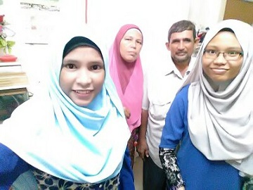

1 / 4

Hari Raya 2016
2 / 4

Aqiqah Anggun - Cucu kak ayah
3 / 4

Family of four plus Anggun
4 / 4

Ayah and Mak
Name : Ibrahim bin Abdul Kader Ages : 60 years old Occupation : Atendan Kesihatan Date of Birth : 24 May 1961 Birth Place : Malacca Childhood place : Jelutong, Pulau Pinang Father's name : Abdul Kader bin Naina Merican Mother's name : Milah bte Abdul Rahman Date of Die : 12 January 2019 Place of Death: Hospital Kepala Batas Reasons : Heart Attack Favourite food: Nasi Kandar, Mee Goreng Memorable Word: 'kak, bukak tv2, ayah nak tengok P.Ramlee' 'kak, tv3, ayah nak tengok hindustan' 'kak, tv2, ayah nak tengok cerita tamil' (thats why I love this kind of story, i am one of the old soul trapped in young body =D) "kak, masak apa?" "kak masak gulai ayam" "sedap dak?" "sedap2x" (always compliment me when I ask) 'kak, milo ada dak gi' (when I stay in hotel, my milo stock always full' me :"adik2x, tengok ayah kat situ" adik:"mana2x" us :open car's window, extend our hand, waving our hand while shout "ayahhhhh" Ayah response with his legend motor "pin, pin (smile face)"


Name : Soleha binti Abdullah Ages : 60 years old Occupation : KAFA's teacher (Retiree) Date of Birth : 03 January 1961 Birth Place : Pulau Pinang Father's name : Abdullah bin Saad bin Haji Sadak bin Haji Sahak Mother's name : Che Mah binti Saad Siblings : Three from four Favourite food: Nasi Ayam Favouritedrink: Teh O Ais Limau, Sirap Limau- Mak, no matter how angry she is, love is still love -

Name : Siti Nurfaizah binti Soleha Ages : 60 years old Occupation : Atendan Kesihatan Date of Birth : 04 May 1999 Birth Place : Hospital Seberang Jaya, Pulau Pinang Date of Die : Three months after birth Place of Death: Kampung Setol Reasons : Demam Kuning
- You can click here to view my biodata -
Name : Siti Nuratiqah binti Ibrahim Ages : 20 years old Date of Birth : 28 October 2001 Birth Place : Hospital SEberang Jaya, Pulau Pinang Favourite food: Nasi Ayam Favouritedrink: Tomato Juice, Carrot Susu- Adek, no matter how naughty you are, still the rock and diamond in our heart -